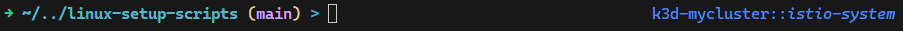
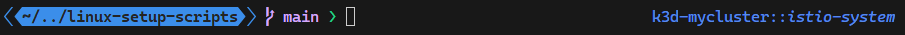
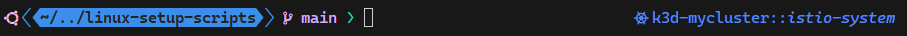
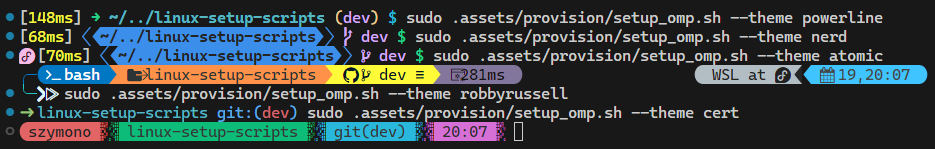

WSL Setup Guideline¤
Windows Subsystem for Linux is a very convenient technology to use Linux OS on Windows. It offers many advantages over classic VMs:
- system interop - it offers running Windows programs from the WSL and vice-versa when used on WSLg,
- GPU and CUDA acceleration on WSLg,
- close to bare-metal performance thanks to using Hyper-V type 1 hypervisor,
- automount - direct access to Windows filesystem from WSL and vice-versa,
- port forwarding to the Windows host - web applications running inside WSL can be accessed directly from Windows web browsers.
- ease of use and fast provisioning times measured in seconds.
Prerequisites¤
You can install all the required features/tools by running below commands in terminal:
# Windows Subsystem for Linux - may require rebooting the system afterwards
wsl --install
# PowerShell Core - WSL provisioning scripts need to be executed in PowerShell Core
wsl/pwsh_setup.ps1
# Git distributed version control system
winget install --id Git.Git
# Other useful tools/applications
winget install --id Microsoft.WindowsTerminal
winget install --id Microsoft.VisualStudioCode
winget install --id gerardog.gsudo
Setting up the WSL distro¤
Setup script¤
To set up specified WSL distro you can use the wsl/wsl_setup.ps1 script. Assuming, that you're using the default Ubuntu distro, you can run the script using the command:
wsl/wsl_setup.ps1 'Ubuntu'
It will just update the distro, install developer tools, other base packages (e.g. git, jq, tar, vim) and other determined setup scopes.
To install other features you need to specify the list of setup scopes using -Scope parameter. Available scopes are:
-
az: azure-cli if python scope specified, do-az from ps-modules if shell scope specified. -
distrobox: podman, distrobox -
docker: docker, containerd, buildx, docker-composeenables systemd on distros where it is not enabled by default
-
k8s_base: kubectl, helm, minikube, k3d, k9s, yq -
k8s_ext: flux, kubeseal, kustomize, argorollouts-cli -
python: python-pip, python-venv, miniforge -
shell: bat, exa, oh-my-posh, pwsh, ripgrep; bash and pwsh profiles, aliases and PS modules
To set up distro using the specified scopes you need to run the command:
# use the recommended 'shell' scope
wsl/wsl_setup.ps1 'Ubuntu' -Scope 'shell'
# use list of scopes for the setup
wsl/wsl_setup.ps1 'Ubuntu' -Scope @('python', 'shell')
Set up distro with oh-my-posh prompt theme engine¤
You can opt to use a very powerful oh-my-posh prompt theme engine, by specifying -OmpTheme parameter with the name of the theme.
To utilize oh-my-posh theme, the shell scope is required to modify shell profiles, but you don't have to specify it, as it will be
automatically added for the full shell experience.
# you can omit the shell scope, as it will be added automatically when OmpTheme is specified
wsl/wsl_setup.ps1 'Ubuntu' -OmpTheme 'base'
There are three themes included in the repository:
base- using standard, preinstalled fonts

powerline- using extended, powerline fonts, e.g. Cascadia Code PL fonts, to be downloaded from microsoft/cascadia-code

nerd- using nerd fonts - can be downloaded manually from ryanoasis/nerd-fonts or installed using the script install_fonts_nerd.ps1

You can also specify any other theme name from Themes | Oh My Posh - it will be downloaded and installed automatically during the provisioning.
It is also possible to easily change the oh-my-posh theme using the .assets/setup/setup_omp.sh script:
# setup oh-my-posh theme using default base fonts
sudo .assets/setup/setup_omp.sh
# setup oh-my-posh theme using powerline fonts
sudo .assets/setup/setup_omp.sh --theme powerline
# setup oh-my-posh theme using nerd fonts
sudo .assets/setup/setup_omp.sh --theme nerd
# specify any theme from https://ohmyposh.dev/docs/themes/ (e.g. atomic)
sudo .assets/setup/setup_omp.sh --theme atomic

Fixing self-signed certificate in the chain¤
Many companies are using corporate MITM proxies with self-signed certificates which causes a lot of connectivity issues.
You can specify the -AddCertificate parameter to the wsl_setup script to intercept self-signed certificates from the SSL chain and install them in the WSL and eventually other installed packages, e.g. azure-cli, which requires it to be set up independently.
wsl/wsl_setup.ps1 'Ubuntu' -AddCertificate
For detailed information about certificate handling, troubleshooting, and the shell helper functions (cert_intercept, fixcertpy), see Corporate Proxy and Certificate Handling.
Using Nix package manager¤
Instead of the traditional per-tool install scripts, you can use the Nix package manager for a faster, reproducible setup. Pass the -Nix flag on first install - subsequent updates auto-detect Nix and use it automatically:
# first install: pass -Nix to install Nix and packages via nix profile
wsl/wsl_setup.ps1 'Ubuntu' -Nix -Scope @('shell', 'pwsh')
# updates: Nix is auto-detected, no need to pass -Nix again
wsl/wsl_setup.ps1
Scopes not available in Nix (bun, distrobox, docker) are installed using traditional scripts automatically.
Using other packages scopes¤
Depending on the use case you can install many other package scopes to further customize the system.
Examples of the most common setup scopes:
# generic setup with omp theme, 'az' scope for the Azure Cloud and Python virtual environments management.
wsl/wsl_setup.ps1 'Ubuntu' -OmpTheme 'base' -Scope @('az', 'python')
# above setup with tools for interacting with externally hosted kubernetes clusters
wsl/wsl_setup.ps1 'Ubuntu' -OmpTheme 'base' -Scope @('az', 'k8s_base', 'python')
# setup with docker and kubernetes stack to experiment with kubernetes clusters using minikube or k3d.
wsl/wsl_setup.ps1 'Ubuntu' -OmpTheme 'base' -Scope @('docker', 'k8s_base', 'k8s_ext')
Update all WSL distros¤
To update all existing WSL distros just run the command:
wsl/wsl_setup.ps1
It will find all installed WSL distros, detect installed setup scopes and update them.
Other WSL distros¤
By default, the command wsl --install installs the Ubuntu distro but there are many other WSL distributions available.
You can find many of them, like Debian, OpenSUSE, AlmaLinux, OracleLinux, Kali... in the Microsoft Store.
Other distros can be found on GitHub, e.g. my favorite WhitewaterFoundry/Fedora-Remix-for-WSL or sileshn/ArchWSL2.